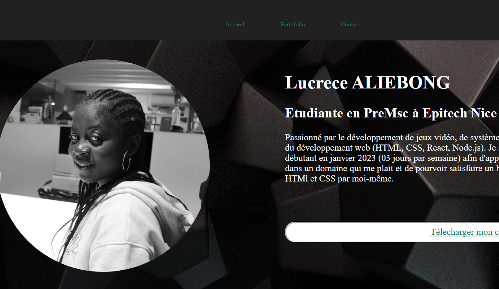
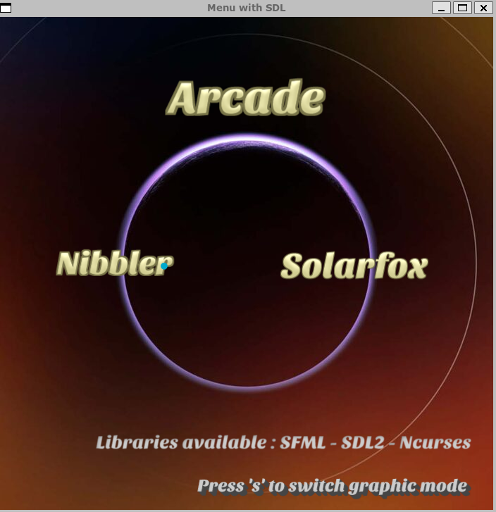
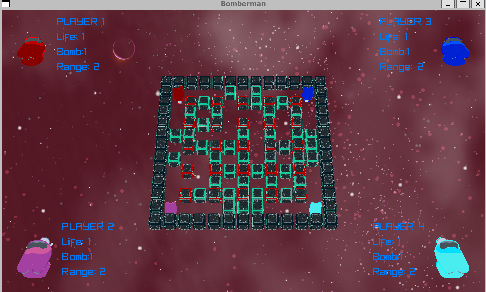

portofolio
Ce site est un de mes projets web personnels que j'ai créer afin de mettre en avant mon savoir faire et ainsi enrichir mes compétences. ce projet m'a permis d'acquérir des compétences en front end, et de me familiariser avec le javascript.
Projet réalisé en HTML & CSS , Javascript
Arcade
Projet réaliser en groupe de 3 personnes.
L'objectif de ce projet était de créer une plateforme de jeu, avec un seul core qui peut charger dynamiquement plusieurs bibliothèques graphiques différentes et avec au moins deux jeux. Les librairies graphiques choisies ont été la SFML, la Ncurses et la SDL2. Les jeux choisies ont été Nibbler et Pacman. 
Projet réalisé en C++ Librairies utilisées SFML, Ncurses, SDL2
Indie Studio
Projet réaliser en groupe de 6 personnes.
L'objectif de ce projet est de mettre en œuvre un jeu vidéo 3D multiplateforme avec des outils du monde réel Le jeu en question est un bomberman en 3D.
C++ avec la librairie graphique Raylib